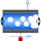

EquilibriumDrumBoilerSimple Evaporator with two states, see Astroem, Bell: Drum-boiler dynamics, Automatica 36, 2000, pp.363-378 |

|
Information
This information is part of the Modelica Standard Library maintained by the Modelica Association.
Model of a simple evaporator with two states. The model assumes two-phase equilibrium inside the component; saturated steam goes out of the steam outlet.
References: Åström, Bell: Drum-boiler dynamics, Automatica 36, 2000, pp.363-378
Parameters (8)
| m_D |
Value: Type: Mass (kg) Description: mass of surrounding drum metal |
|---|---|
| cp_D |
Value: Type: SpecificHeatCapacity (J/(kg·K)) Description: specific heat capacity of drum metal |
| V_t |
Value: Type: Volume (m³) Description: total volume inside drum |
| p_start |
Value: system.p_start Type: AbsolutePressure (Pa) Description: Start value of pressure |
| V_l_start |
Value: V_t / 2 Type: Volume (m³) Description: Start value of liquid volumeStart value of volume |
| allowFlowReversal |
Value: system.allowFlowReversal Type: Boolean Description: allow flow reversal, false restricts to design direction (port_a -> port_b) |
| energyDynamics |
Value: system.energyDynamics Type: Dynamics Description: Formulation of energy balance |
| massDynamics |
Value: system.massDynamics Type: Dynamics Description: Formulation of mass balance |
Connectors (4)
| port_a |
Type: FluidPort_a Description: Fluid connector a (positive design flow direction is from port_a to port_b) |
|
|---|---|---|
| port_b |
Type: FluidPort_b Description: Fluid connector b (positive design flow direction is from port_a to port_b) |
|
| heatPort |
Type: HeatPort_a |
|
| V |
Type: RealOutput Description: liquid volume |
Components (2)
| system |
Type: System Description: System wide properties |
|
|---|---|---|
| sat |
Type: SaturationProperties Description: State vector to compute saturation properties |
Used in Examples (1)
|
Modelica.Fluid.Examples.DrumBoiler
Complete drum boiler model, including evaporator and supplementary components |